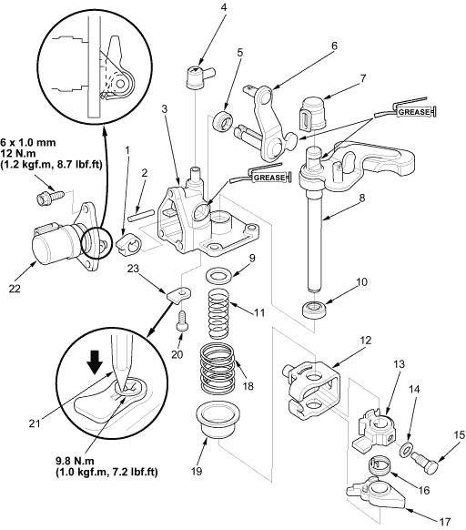

 |
- SHIFT LOCK CAM A
- ROLLER
- SHIFT ARM COVER
- BREATHER CAP
Turn the arrow toward the front of the vehicle, and install it.
- DUST SEAL, Replace.
- SELECT LEVER
Be careful not to damage the dust seal when installing it.
- DUST COVER
- SHIFT LEVER
- WASHER
- OIL SEAL, Replace.
- 1ST/2ND SELECT SPRING
- INTERLOCK
- SHIFT ARM
- 8 mm SPRING WASHER
- 8 mm SPECIAL BOLT
31 Nm (3.2 kgf/m, 23 lbf/ft)
- MBS RETURN SPRING
- MBS ARM
- 5TH SELECT SPRING
- SELECT STOP PLATE
- SCREW, Replace.
- Stake
- REVERSE LOCKOUT SOLENOID
Apply liquid gasket (P/N 08C70-K0234M) to the sealing surface.
- BREATHER PLATE
|